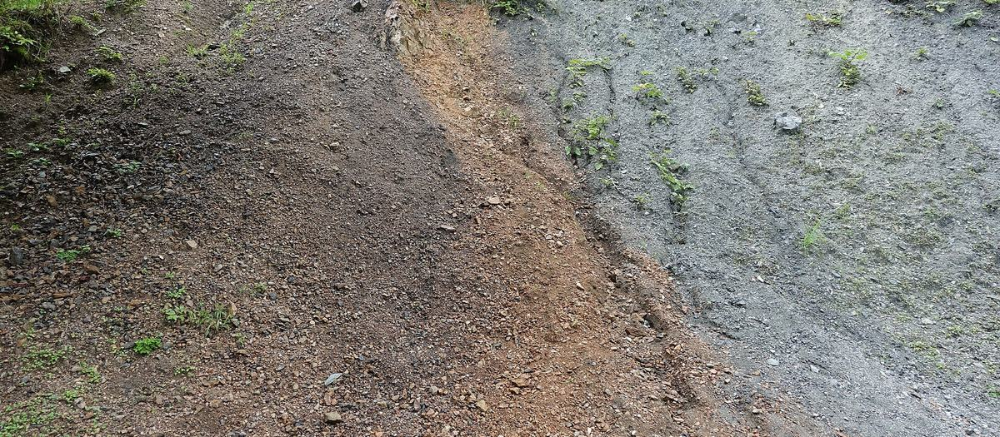
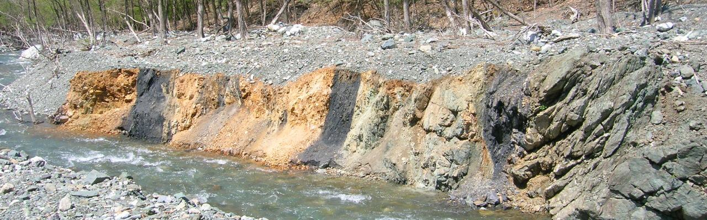
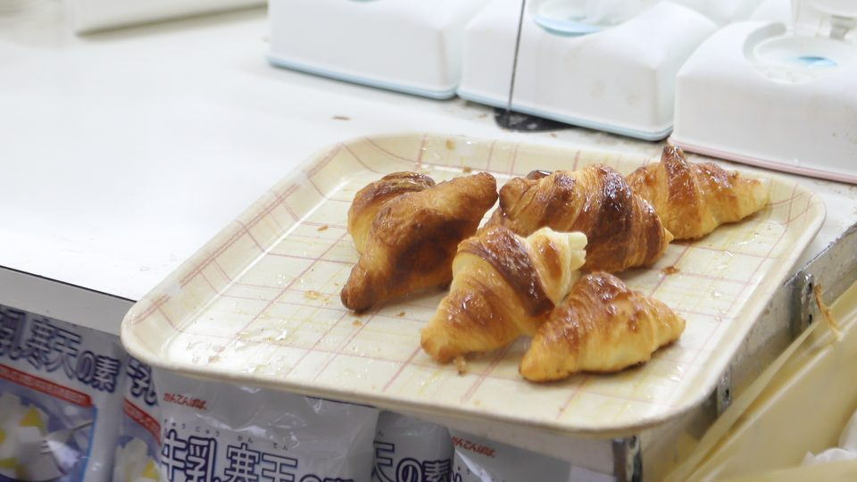
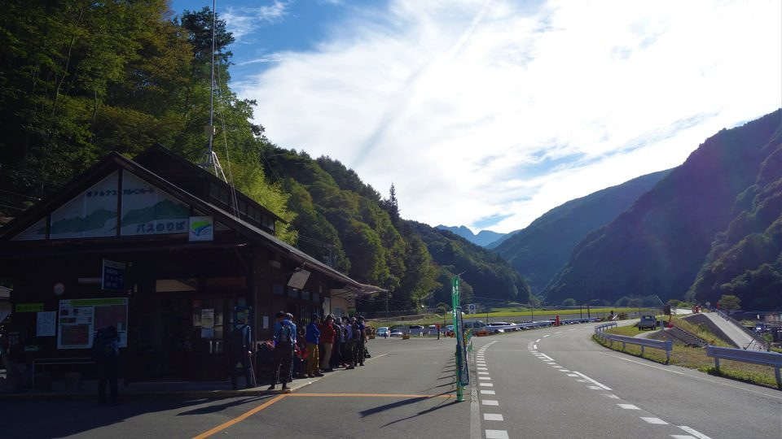
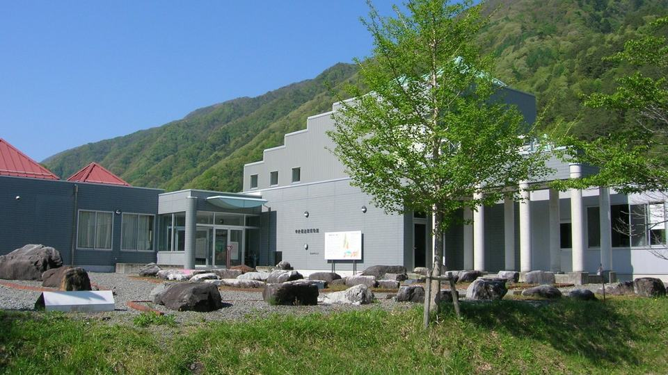
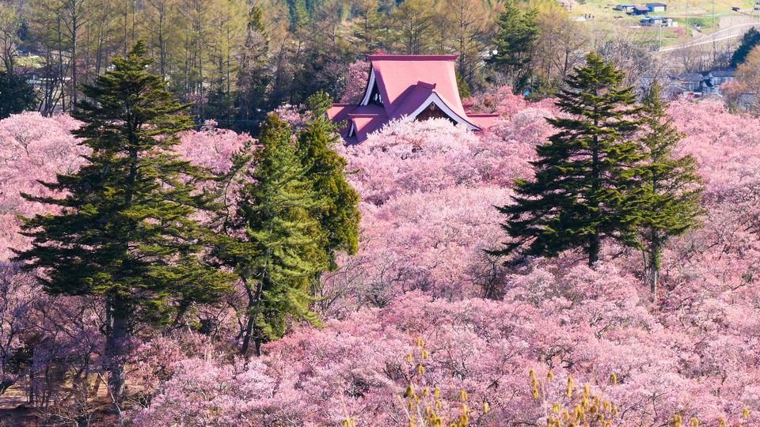

ABOUT
分杭峠って、どんなところ？
分杭峠は、長野県の伊那市長谷と大鹿村のさかいにある、標高1,424mの峠です。南アルプスのふもと、深い山あいを縫う国道152号の途中にあり、あたりは鳥の声と風の音しか聞こえないような、静かな森につつまれています。
この道はかつて「秋葉街道」と呼ばれ、信州と遠州（静岡）をむすぶ塩の道・信仰の道として、旅人が行き交いました。峠の名前は、江戸時代に高遠藩が領地のさかいに「分杭（くい）」を立てたことに由来するといわれます。
そして1995年。この静かな峠は、ある出来事をきっかけに「ゼロ磁場の聖地」「日本有数のパワースポット」として、全国にその名を知られることになります。
- 標高
- 1,424m
- 場所
- 長野県 伊那市長谷・大鹿村のさかい（国道152号）
- 足もと
- 日本最大級の断層「中央構造線」の真上
- 旧街道
- 秋葉街道（塩の道・信仰の道）
- 異名
- “日本三大パワースポット”に数えられることも
LEARN
“ゼロ磁場”を知る
はじまりの物語 — 1995年夏
1995年7月、「気」の研究をしていた工学者・佐々木茂美氏の招きで、中国の著名な気功師・張志祥（ちょう・ししょう）氏が、この峠を訪れました。張氏は、中国で気功の聖地とされる蓮花山（れんかざん）を見いだした人物。その張氏が分杭峠に立ち、「ここは蓮花山に勝るとも劣らない、世界でも有数の気場だ」と語ったのです。
このひとことが、すべてのはじまりでした。以来、分杭峠は「ゼロ磁場」という言葉とともにテレビや雑誌でくり返し紹介され、全国から人が訪れる場所になりました。
「ゼロ磁場」といわれるわけ
分杭峠の足もとには、九州から関東まで約1,000kmもつづく日本最大級の断層「中央構造線」が走っています。この断層を境に、西側と東側の大地が長い年月をかけて押し合っており、その力がぶつかり合う場所では、磁力などのエネルギーが打ち消し合って「ゼロ」の状態になっている——。これが「ゼロ磁場」と呼ばれる理由として語られている説です。
「方位磁石の針がゆれて定まらない」「手をかざすとぴりぴりする」といった体験談も、まことしやかに語りつがれています。

中央構造線 — 足もとにある、日本の大断層
ゼロ磁場のうわさを抜きにしても、分杭峠が地質学的にとくべつな場所であることは本当です。中央構造線は、日本列島がまだ大陸のふちにあった約1億年前にはたらいた、日本最大級の断層。九州から四国、紀伊半島をとおって関東へとつづき、分杭峠のある谷は、まさにその断層がつくった地形です。
峠の南、大鹿村には断層の境目をじかに見られる「北川露頭（きたがわろとう）」や、日本でここだけの断層専門博物館「中央構造線博物館」もあり、このあたり一帯は「南アルプスジオパーク」にも認定されています。大地のエネルギーを、科学の目でたしかめられる場所でもあるのです。

正直にいうと — 科学的には、どうなの？
「ゼロ磁場」や「気場」は、いまのところ科学的に確認・証明されたものではありません。公的な機関が「ここは磁場が特別だ」と認めた事実もなく、方位磁石が必ず狂うわけでもない、というのが正直なところです。
それでも、多くの人が「なんだか落ち着く」「すっきりした」と感じて帰っていきます。標高1,400mの澄んだ空気、断層がつくった深い谷、森のしずけさ。理屈はどうあれ、心と体がゆるむ場所であることはたしかです。不思議は不思議のまま、たしかめに行く——それがこの峠のいちばん楽しい歩き方だと思います。
EXPERIENCE
「気場」でのしずかな過ごし方
バスを降りたら、案内にそって坂道を3〜5分ほど下ります。木々のあいだに、斜面にそって段々に置かれたベンチが見えてきたら、そこが「気場（きば）」。張志祥氏が「とくに気が強い」と示したと伝わる、分杭峠の中心スポットです。
ここでやることは、たったひとつ。すわって、しずかに過ごすこと。それだけです。
- ベンチにすわる。あいている場所でOK。荷物をおろして、肩の力をぬきます。
- 目をとじて、深呼吸。森のにおい、鳥の声、谷をわたる風。五感が少しずつひらいていきます。
- 30分〜1時間、ただ「いる」。スマホはポケットへ。なにかを感じても、感じなくても、それが答えです。
- 帰るまえに、峠の空気をもうひと呼吸。おみやげは、ゆるんだ心と体。ゴミはぜんぶ持ち帰りましょう。
訪れた人の声
30分ほどすわっていたら、手のひらがじんわりあたたかくなってきた気がして。帰るころには肩が軽くなっていました。
— 個人の感想です正直、とくべつな何かは感じませんでした。でも、標高1,400mの森で1時間ぼーっとする体験そのものが贅沢。ものすごくリフレッシュできました。
— 個人の感想です方位磁石を持っていきました。狂ったかどうかは…ぜひ自分の目でたしかめてみてください。それが一番おもしろいので。
— 個人の感想です※気場より下の沢（「水場」「裏気場」と呼ばれていた場所）は、落石などの危険があるため立ち入り禁止です。ロープの先には入らないでください。バス降り場の近くに水洗トイレがあります。
ACCESS
行き方 — 峠へはバスで
ここだけは、まず押さえて！
分杭峠には駐車場がなく、峠周辺は駐停車禁止です。ふもとの「南アルプス長谷 戸台パーク」（仙流荘となり・約600台駐車可）に車をとめて、路線バス「分杭 気の里ライン」で向かいます。
分杭 気の里ライン（2026年）
戸台パーク ⇔ 分杭峠頂上を約30分でむすぶ路線バス。2026年は4月12日〜12月1日（予定）の運行です。チケットは仙流荘内の発券機・窓口で（クレジットカード・電子マネー・コード決済OK）。
車で戸台パークへ
中央道の伊那IC・小黒川スマートICから約40分（駒ヶ根ICからも約20km）。東京方面からも名古屋方面からも、日帰りできる距離です。国道152号の峠区間は冬期（12月〜3月ごろ）通行止めになります。
電車の人は茅野駅から
JR中央本線の茅野駅から、登山バス「南アルプスジオライナー」で戸台パークへ。2026年は7月17日〜10月12日の金・土・日・祝を中心に運行（お盆・秋の連休期間は毎日）。運行日が限られるので、事前にJRバス関東の案内をご確認ください。
きっぷ・料金
- 往復 大人 2,000円
- 往復 小学生 1,260円
- 駐車場 1台 1,000円
問い合わせ：南アルプス林道バス営業所 0265-98-2821（運行期間中 7:30〜17:00）
| のぼり：戸台パーク発 | くだり：分杭峠発 |
|---|---|
| 9:00 | 10:00 |
| 9:45土休日のみ | 10:45土休日のみ |
| 10:30 | 12:00 |
| 11:30土休日のみ | 12:30土休日のみ |
| 13:00 | 14:00 |
| 14:00土休日のみ | 15:00土休日のみ |
| 14:30 | 16:00 |
「土休日のみ」の便は、土曜・休日など決まった日だけの運行です。所要は片道約30分。ダイヤ・料金は変わることがあります。おでかけ前に伊那市観光協会の最新運行情報か伊那市公式ページをご確認ください。
モデルコース — ゆったり半日プラン
- 8:40
戸台パーク着。駐車して、仙流荘でバスチケットを購入。
- 9:00
バスで出発。断層の谷を見おろす山道を、のんびり30分。
- 9:30
分杭峠に到着。坂を下って「気場」へ（徒歩3〜5分）。
- 9:40
ベンチで約2時間、森にひたる。深呼吸、読書、うたた寝も◎。
- 12:00
峠発のバスで下山。
- 12:45
「道の駅 南アルプスむら長谷」で焼きたてクロワッサンのお昼。
- 14:00
仙流荘の日帰り温泉でひとやすみ。山を眺めながらの湯は格別。
- 15:00
帰路へ。時間があれば高遠の城下町に寄り道も。
※2026年の平日ダイヤをもとにした一例です。
AROUND
あわせて寄りたい、ふもとの楽しみ

道の駅 南アルプスむら長谷
峠へ向かう国道152号ぞい。焼きたてのミニクロワッサンが大人気で、お昼どきには地元食材のランチも。行き帰りの立ち寄り定番です。

仙流荘（戸台パーク）
バス発着地のすぐとなりにある温泉宿。日帰り入浴ができ、山なみを眺めるお風呂とサウナで、峠のしずけさの余韻にひたれます。

中央構造線博物館・北川露頭
峠の南、大鹿村へ。日本でここだけの断層専門博物館と、断層の境目をじかに観察できる露頭。ゼロ磁場の「足もとの正体」に出会えます。

高遠城址公園
「天下第一の桜」とうたわれる、日本屈指の桜の名所。春に訪れるなら、淡紅色のタカトオコヒガンザクラと峠をセットでどうぞ。
TIPS
訪れるまえの、ちいさな心得
持ちもの
気をつけること
タップすると印が付きます（このページを閉じると消えます）。
Q&A
よくある質問
本当に方位磁石が狂うんですか？
「針がゆれて定まらなかった」という体験談は昔からたくさんありますが、公的に確認された事実ではなく、「ふつうに北を指した」という報告も同じくらいあります。だからこそ、自分の磁石でたしかめるのが一番おもしろいところ。結果がどちらでも、話のタネになります。
どのくらい滞在すればいい？
バスの組み合わせで、滞在時間はおよそ30分か、約2時間半になります（例：9:00発で上がって10:00発で下りる／12:00発で下りる）。はじめてなら、気場でゆっくりできる2時間半コースがおすすめです。
車で峠まで行けませんか？
国道152号を通り抜けること自体はできますが、峠に駐車場はなく、周辺は駐停車禁止です（以前あった臨時駐車場は廃止されました）。見学するなら、戸台パークからバスを使うのが唯一の方法です。
冬でも行けますか？
バスの運行は2026年は12月1日まで（予定）で、国道152号の峠区間も冬のあいだ（12月〜3月ごろ）は通行止めになります。訪れるなら、新緑〜紅葉のシーズンがおすすめです。
行くと体にいいことがありますか？
健康への効果が証明されているわけではありません。体験は人それぞれで、「何も感じなかった」という人もたくさんいます。効能を期待しすぎず、「森の中でしずかに過ごす、とびきり上等な休憩」と思って出かけるのが、いちばん満足度の高い楽しみ方です。